Indianapolis Travel Guide
Capital of Indiana, is a vibrant city known for its rich history, diverse culture, and dynamic sports scene. Visitors can explore a variety of attractions, from the iconic Indianapolis Motor Speedway to the beautiful White River State Park. The city boasts a thriving arts scene with numerous museums, galleries, and theaters. Food enthusiasts will appreciate the eclectic culinary offerings, ranging from classic Midwestern fare to innovative dining experiences.
Places to See in Indianapolis
Des Moines Guy, CC BY-SA 3.0, via Wikimedia Commons; Image Size Adjusted

American Legion Mall
Expansive green space featuring war memorials, monuments, and open lawns designed for reflection and public gatherings.
Danksergeant15, CC BY-SA 4.0, via Wikimedia Commons; Image Size Adjusted

Benjamin Harrison Presidential Site
Historic Victorian-era home offering guided tours, period furnishings, and exhibits honoring the legacy of America’s 23rd president.
Dsmspence, CC BY-SA 3.0, via Wikimedia Commons; Image Size Adjusted

Bottleworks Hotel
Boutique hotel blending Art Deco architecture with modern luxury, offering upscale accommodations, dining, and event spaces in a revitalized historic bottling plant.
Jeff P from Berkeley, CA, USA, CC BY 2.0, via Wikimedia Commons; Image Size Adjusted
.jpg){kind=link}
Central Canal
Scenic urban waterway offering walking paths, gondola rides, and recreational rentals alongside cultural landmarks and public art.
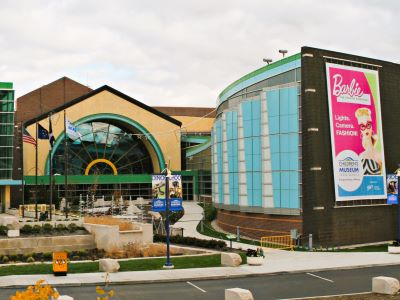
Jeff P from Berkeley, CA, USA, CC BY 2.0, via Wikimedia Commons; Image Size Adjusted
Children's Museum of Indianapolis
Immersive multi-level museum featuring interactive exhibits, a historic carousel, dinosaur fossils, and seasonal outdoor sports experiences designed to inspire learning through play.
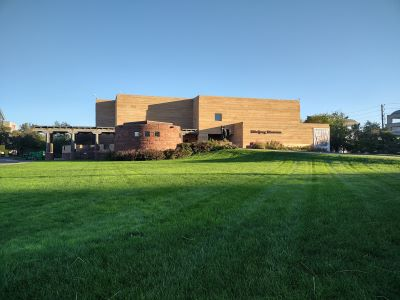
Jeff P from Berkeley, CA, USA, CC BY 2.0, via Wikimedia Commons; Image Size Adjusted
Eiteljorg Museum of American Indians and Western Art
Museum showcasing Native American and Western art through immersive exhibits, cultural storytelling, and rotating contemporary installations.
Jeff P from Berkeley, CA, USA, CC BY 2.0, via Wikimedia Commons; Image Size Adjusted
Indiana Historical Society
Interactive museum and research center offering exhibits, archival collections, and cultural programming that bring Indiana’s history to life.
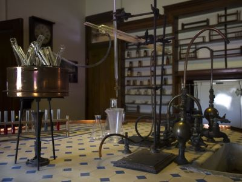
Jeff P from Berkeley, CA, USA, CC BY 2.0, via Wikimedia Commons; Image Size Adjusted
Indiana Medical History Museum
Preserved 19th-century pathology facility offering guided tours through historic medical labs, autopsy rooms, and exhibits on early psychiatric research.
Jonathunder, CC BY-SA 3.0, via Wikimedia Commons; Image Size Adjusted

Indiana Repertory Theatre
Professional regional theater presenting acclaimed stage productions, educational programs, and live performances within a beautifully restored historic theater building.
Jeff P from Berkeley, CA, USA, CC BY 2.0, via Wikimedia Commons; Image Size Adjusted
Indiana State Capitol
Renaissance Revival-style government building housing all three branches of Indiana’s state government, offering free public tours and historic architectural features.
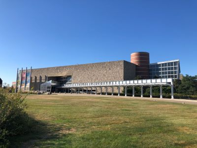
Jeff P from Berkeley, CA, USA, CC BY 2.0, via Wikimedia Commons; Image Size Adjusted
Indiana State Museum
Interactive museum featuring science, art, culture, and history exhibits that explore Indiana’s past, present, and future through immersive experiences.
Jeff P from Berkeley, CA, USA, CC BY 2.0, via Wikimedia Commons; Image Size Adjusted
Indiana War Memorial and Museum
Three-floor military museum and neoclassical memorial honoring Hoosier veterans with exhibits spanning U.S. conflicts and a symbolic Shrine Room.
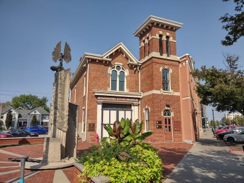
Jeff P from Berkeley, CA, USA, CC BY 2.0, via Wikimedia Commons; Image Size Adjusted
Indianapolis Fire Fighters Museum
Small specialty museum preserving historic firefighting equipment, apparatus, and artifacts that illustrate the evolution of fire service traditions and technology.
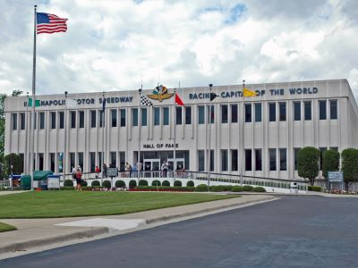
Jeff P from Berkeley, CA, USA, CC BY 2.0, via Wikimedia Commons; Image Size Adjusted
Indianapolis Motor Speedway Museum
Renovated motorsports museum featuring legendary race cars, immersive exhibits, and guided tours of the iconic Indianapolis Motor Speedway.
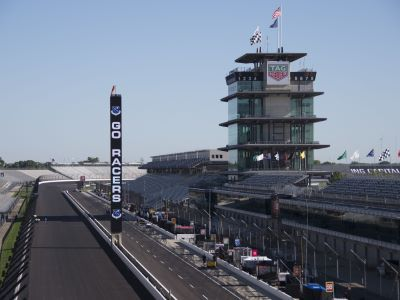
Jeff P from Berkeley, CA, USA, CC BY 2.0, via Wikimedia Commons; Image Size Adjusted
Indianapolis Motor Speedway
Legendary racing venue and home of the Indianapolis 500, offering track tours, major motorsports events, and a rich legacy of speed and innovation.
Jeff P from Berkeley, CA, USA, CC BY 2.0, via Wikimedia Commons; Image Size Adjusted
Indianapolis Public Library Central Library
Architecturally striking public library offering extensive collections, digital resources, community programs, and panoramic city views from its glass-encased atrium.
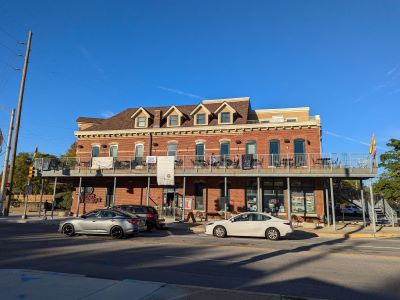
Jeff P from Berkeley, CA, USA, CC BY 2.0, via Wikimedia Commons; Image Size Adjusted
Kurt Vonnegut Museum & Library
Literary museum and cultural center honoring Kurt Vonnegut’s legacy through exhibits, personal artifacts, and advocacy for free expression and the arts.
Jeff P from Berkeley, CA, USA, CC BY 2.0, via Wikimedia Commons; Image Size Adjusted
Newfields
Expansive cultural campus combining art galleries, historic architecture, botanical gardens, and immersive exhibitions across 152 acres.
Jonathunder, CC BY-SA 3.0, via Wikimedia Commons; Image Size Adjusted
Oldfields–Lilly House & Gardens
Historic 26-acre estate featuring a restored 1930s mansion, formal gardens, and guided tours that reflect Indiana’s Country Place Era heritage.
-400.jpg)
Jeff P from Berkeley, CA, USA, CC BY 2.0, via Wikimedia Commons; Image Size Adjusted
Saint Mary Catholic Church
Historic parish church featuring traditional liturgical worship, architectural artistry, and a longstanding role as a spiritual and cultural anchor for its community.
Jeff P from Berkeley, CA, USA, CC BY 2.0, via Wikimedia Commons; Image Size Adjusted
Soldiers and Sailors Monument
Neoclassical limestone monument honoring Indiana veterans of early American wars, featuring sculptures, a gift shop, and an enclosed observation deck with panoramic city views.
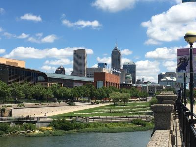
Jeff P from Berkeley, CA, USA, CC BY 2.0, via Wikimedia Commons; Image Size Adjusted
White River State Park
Urban cultural park offering scenic trails, green spaces, and access to museums, concerts, and recreational rentals along the White River and Central Canal.
Overview
Indianapolis is the capital and largest city of Indiana, a planned city at the center of the state that is known worldwide as the home of the Indianapolis 500, held each Memorial Day weekend at the Indianapolis Motor Speedway. Nicknamed "Indy" and the "Circle City" for the circular Monument Circle at its center, it is also known as a center for amateur and professional sports, a hub for conventions, and the headquarters of the NCAA. The city's downtown is compact and walkable, with museums, monuments, and public spaces within a short distance of each other.
Visitors come to Indianapolis for the race and the Speedway museum, for the Children's Museum of Indianapolis, the largest children's museum in the world, for Newfields, and for Colts, Pacers, and Fever games. They also visit for the Indiana War Memorial, the Soldiers and Sailors Monument, and the Indianapolis Cultural Trail, and the city is an affordable and welcoming destination with a growing food and craft beer scene.
History
Indianapolis was founded in 1821 as a new capital for Indiana, in the center of the state, on a site selected by the legislature along the White River. Surveyor Alexander Ralston, who had worked with Pierre L'Enfant on Washington, D.C., designed the city with a central circle and diagonal avenues radiating from it, and the government moved here in 1825. The National Road and the railroads, which made it a major rail junction, helped it grow, and in the Civil War it was a key supply and training center for the Union. The Indianapolis Motor Speedway opened in 1909 and held the first Indy 500 in 1911, and the city's role in sports grew, with the Colts moving here in 1984 and the NCAA headquarters in 1999.
Sightseeing and Popular Landmarks
Monument Circle is the center of the city, and the Soldiers and Sailors Monument rises 284 feet in the middle with an observation deck at the top. Other landmarks include the Indiana State Capitol, the Indiana War Memorial, the Central Canal walk, American Legion Mall, and the Central Library. White River State Park is the site of the Indianapolis Zoo, the Eiteljorg Museum and the NCAA Hall of Champions.
Culture and Museums
The Children's Museum of Indianapolis has a huge collection of interactive exhibits and a dinosaur gallery, and Newfields is a campus that includes the Indianapolis Museum of Art, the Oldfields-Lilly House & Gardens, and a 100 Acres sculpture park. The Eiteljorg Museum shows Native American and Western art, the Indiana State Museum covers the state's history, and the Kurt Vonnegut Museum & Library honors the author. Other attractions include the Benjamin Harrison Presidential Site, the Indiana Historical Society, the Indiana Repertory Theatre, and the Indianapolis Motor Speedway Museum.
Parks
The city has a large park system. White River State Park is a downtown park with trails, canals, and the zoo, and the Central Canal Towpath is a scenic walking and biking path. The Indianapolis Cultural Trail is an eight-mile urban bike and pedestrian path that connects the downtown cultural districts, and Eagle Creek Park on the west side is one of the largest city parks in the country, with a reservoir and nature areas. Garfield Park, Holliday Park, and the Monon Trail are also popular.
Sports
Indianapolis is a major sports city. The Indianapolis Colts of the NFL play at Lucas Oil Stadium, the Indiana Pacers of the NBA and the Indiana Fever of the WNBA play at Gainbridge Fieldhouse. The Indianapolis 500 is the biggest single-day sporting event in the world.
Seasons and Weather
Indianapolis has a humid continental climate with four distinct seasons. Summers are warm and humid, with highs in the 80s°F, and winters are cold, with highs in the 30s°F and about 25 inches of snow. Spring and fall are mild and are the best times to visit, and May is very busy because of the Indy 500. Thunderstorms are common in summer.
This article uses material from Wikipedia as well as information from official tourism and institutional sources. Key references include Visit Indy, Indianapolis Motor Speedway, The Children's Museum of Indianapolis, Newfields, Indiana State Museum, Indy Cultural Trail, and National Weather Service Indianapolis. Wikipedia material is from the articles "Indianapolis" and "History of Indianapolis", and is available under the Creative Commons Attribution-Share-Alike License 3.0.
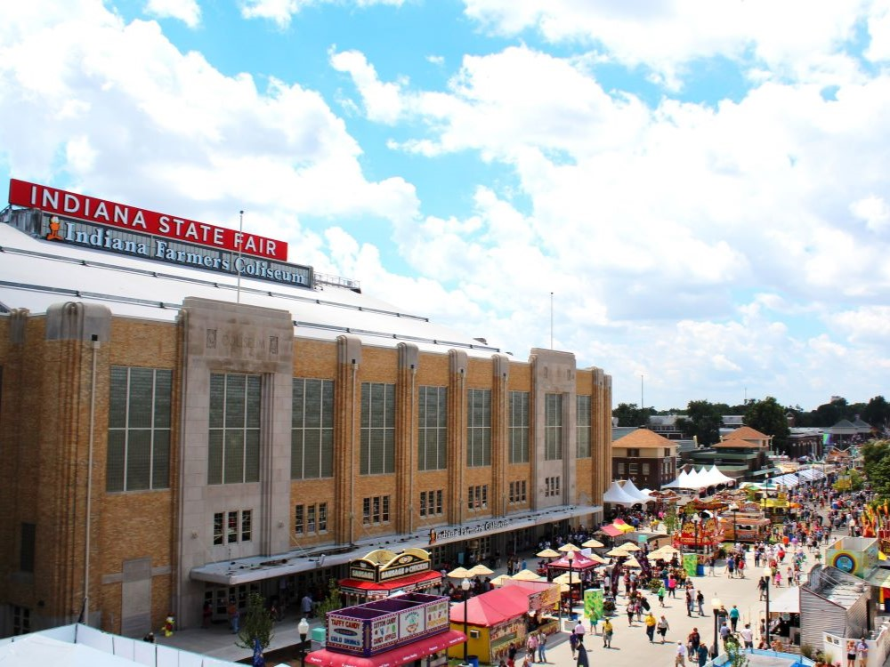
.jpg){kind=link}
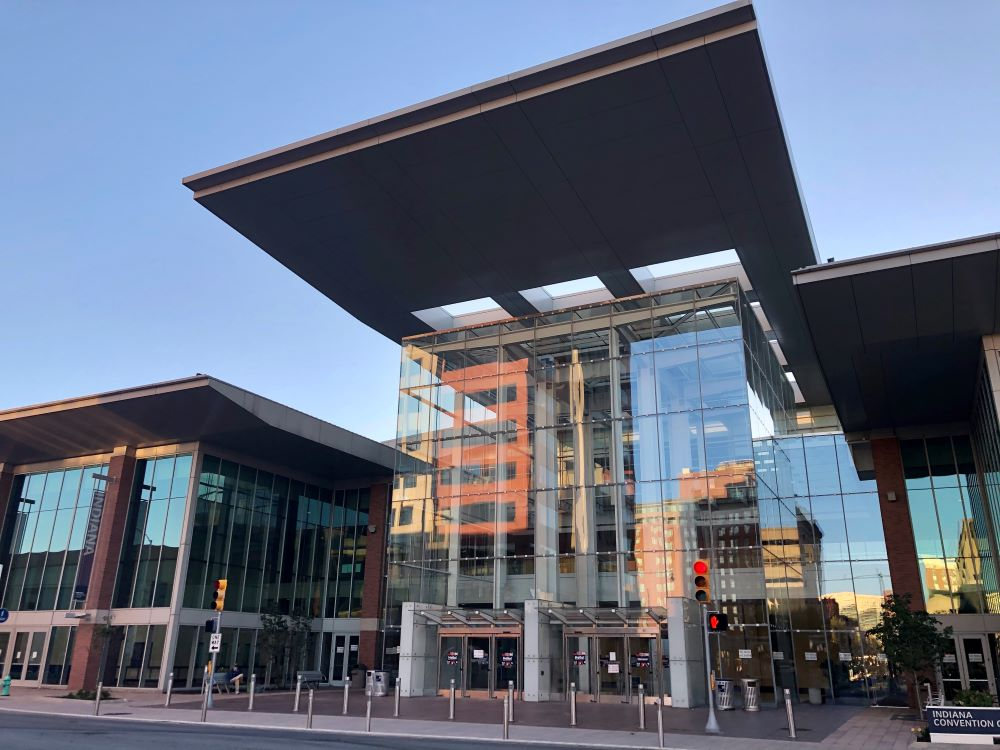